Computer Exercise 4 - Group 17
Contents
- Load Data
- Scatterplot of the data
- Q1 - Seperability
- handBW image
- Class seperation
- Q2 - Multiple thresholding results
- Scatterplot ot three RGB hands.
- Red channel histogram
- Green channel histogram
- Blue channel histogram
- Training Areas
- Select G and B as features and split into training data.
- Classify data
- Linear Discriminant Analysis
Load Data
Let's load the synthetic datasets.
clear; load lab4/codes/cdata; addpath lab4/codes;
Scatterplot of the data
figure;
plot(cdata(:,1),cdata(:,2),'.');
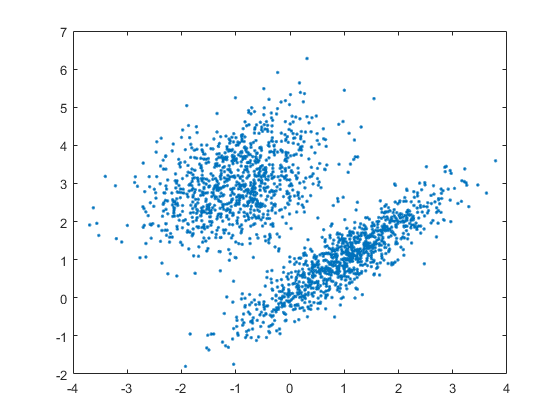 Q1 - Seperability
From the plot above, it seems likely that there are two classes present. Using only one feature is not enough to seperate the two classes. This is due to the fact that if you reduce the data to one dimension, the classes will overlap.
handBW image
I = imread('lab4/codes/handBW.pnm'); % Read the image figure; imshow(I); % Show the image figure; imhist(I); % Show the histogram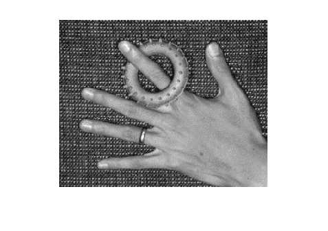 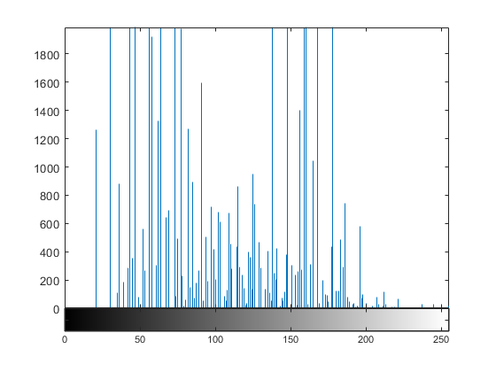
Class seperation
From the histogram, we see that it looks bimodal. We can try to seperate the three classes in the image using thresholding.
figure; t = multithresh(I, 2); mtresh(I, 76, 131); colormap(gray); colorbar();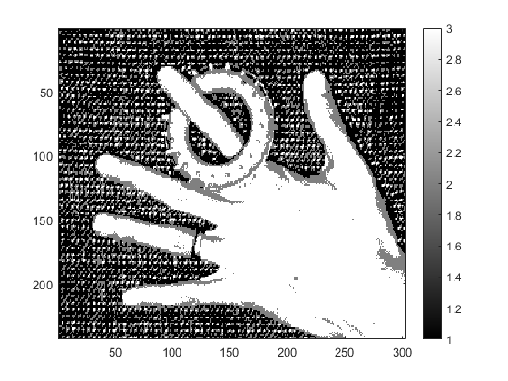
Q2 - Multiple thresholding results
We see that multiple thresholding is somewhat able to seperate the background and foreground and struggles to seperate the hand and the object. Also, the background has a pattern that gets missplaced as foreground. This makes sense given the observed histogram and it's bimodal distribution.
Scatterplot ot three RGB hands.
I2 = imread('lab4/codes/hand.pnm'); % Read the image figure; imshow(I2); % Show the image R = I2(:,:,1); % Separate the three layers, RGB G = I2(:,:,2); B = I2(:,:,3); figure; plot3(R(:),G(:),B(:),'.') % 3D scatterplot of the RGB data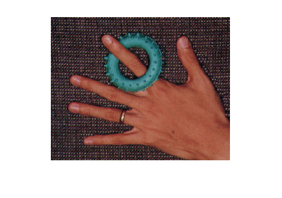 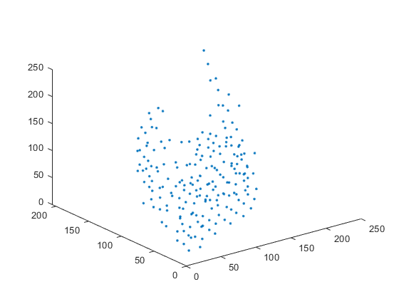
Red channel histogram
figure; imhist(R);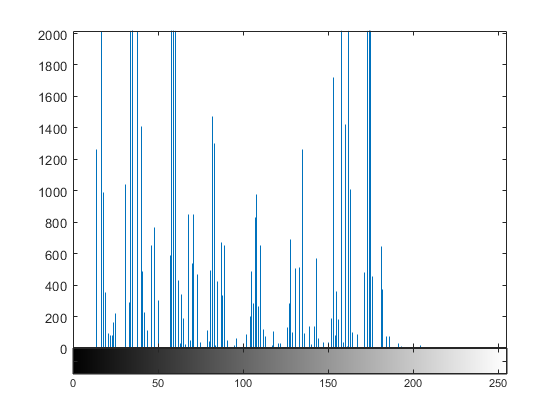
Green channel histogram
figure; imhist(G);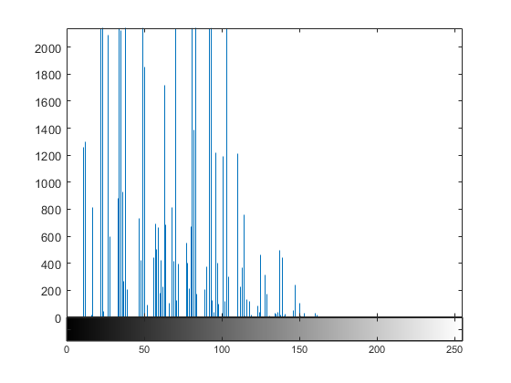
Blue channel histogram
figure; imhist(B);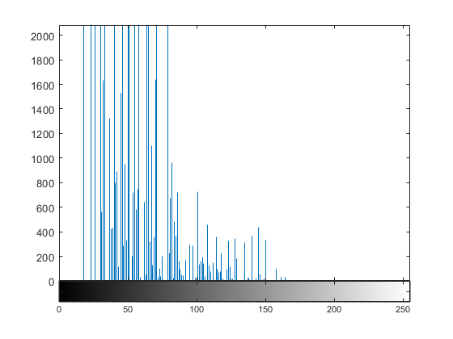
Training Areas
label_im = imread('lab4/codes/hand_training.png'); % Read image with labels figure; imagesc(label_im); % View the training areas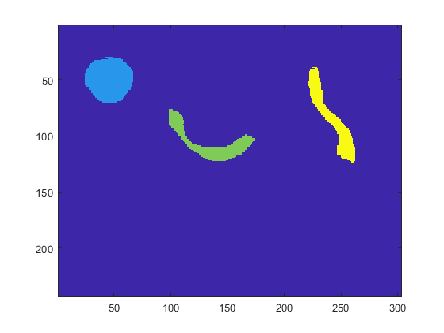
Select G and B as features and split into training data.
I3(:,:,1) = G; % Create an image with two bands/features I3(:,:,2) = B; [data,class] = create_training_data(I3,label_im); % Arrange the training data into vectors figure; scatterplot2D(data,class); % View the training feature vectors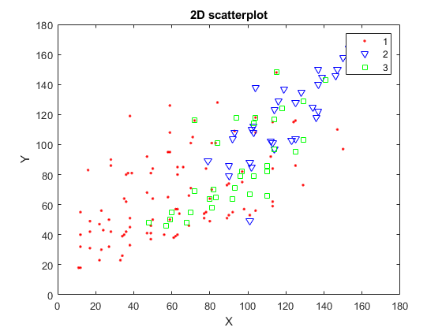
Classify data
Itest = im2testdata(I3); % Reshape the image before classification C = classify(double(Itest), double(data), double(class)); % Train classifier and classify the data ImC = class2im(C, size(I3,1), size(I3,2)); % Reshape the classification to an image figure; imagesc(ImC); % View the classification result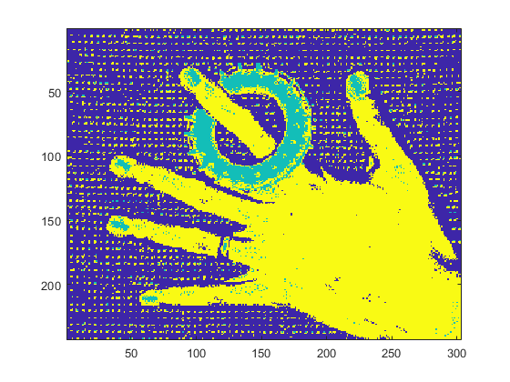
Linear Discriminant Analysis
There are several assumptions made about the data when using Linear Discriminant Analysis. These are:
Multivariate Normality: Independent variables are normal.
Homogeneity of variance: Variances among group variables are the same across levels of predictors.
Multicollinearity: